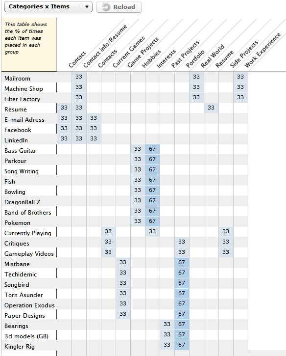

The process I went through for this second card sorting experiment was basically the same as the process for Foldable.me. I used WebSort.net and my roomates (except one of them left before I could get a response), but regardless I still got some results.
The current architecture of my portfolio is generally unorganized, and there isn't much content. I know what I want to put in my portfolio, it is just a matter of where. I think that my Hobbies/Interests will go into one page, seeing as the content in those pages are commonly grouped together. Also, some more analysis will have to go into which projects go into past projects, game projects, and portfolio. 